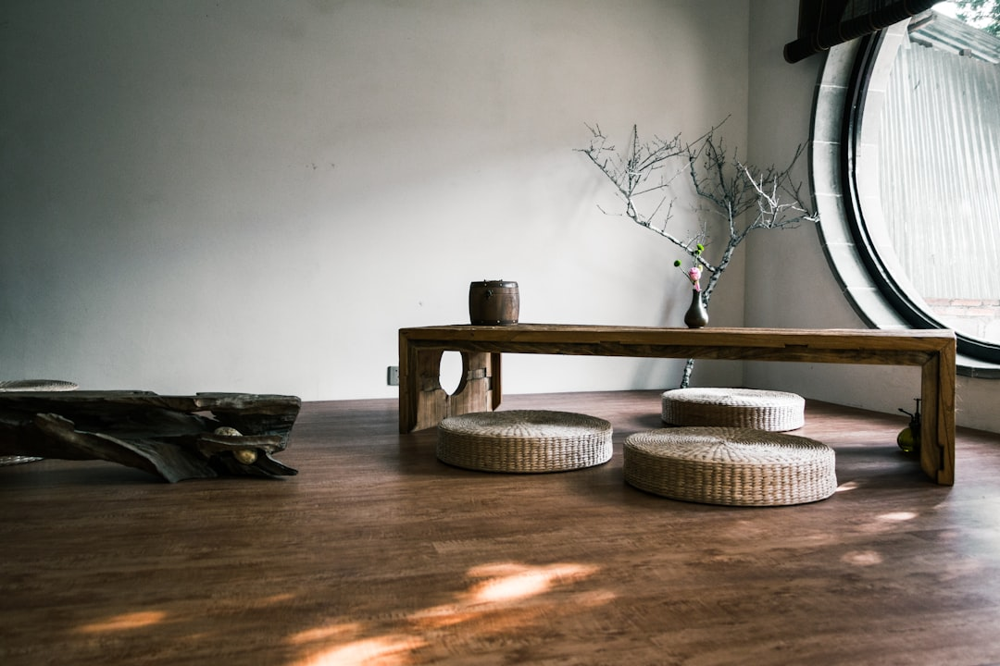
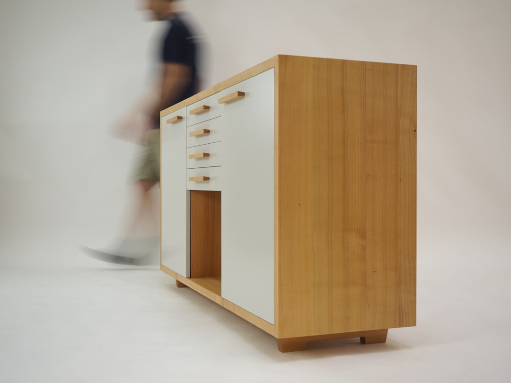

02 — The Collection
Lightwood
Chair · Design — Jasper Morrison

가벼움과 견고함의 균형. 손에 드는 순간, 설계의 정직함이 전해집니다.
재스퍼 모리슨은 “슈퍼 노멀”을 이야기합니다. 튀지 않지만 오래 쓰이는 것, 말없이 일상에 스며드는 것. Lightwood는 그 태도가 목재의 물성으로 번역된 의자입니다. 얇게 다듬은 프레임은 눈으로 보기엔 섬세하지만, 손으로 들어 올리면 놀랄 만큼 단단합니다. 접합부는 못이 아니라 정밀하게 맞물린 목공으로 지탱되고, 등받이의 미세한 각도가 오래 앉아도 편안한 자세를 만듭니다. 과장 없는 실루엣 안에, 백 년의 목공이 조용히 담겨 있습니다.
Specification
- 디자이너
- Jasper Morrison
- 타입
- 다이닝 체어 (Chair)
- 프레임
- 오크 · 비치 솔리드 우드
- 접합
- 정밀 목공 조인트 · 장인 손마감
- 컬렉션
- Maruni Collection · Super Normal


Own a Maruni